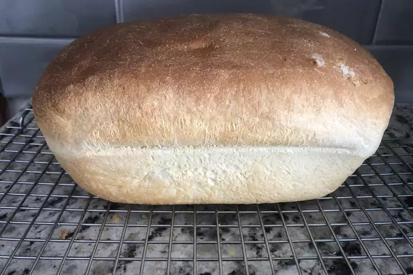

Bread in machine bread recipe

General info:
- Prep: 5 mins
- Cook: 3 hrs
- Total: 3hrs 5 mins
- Servings: 12
Ingredients:
- 1 cups warm water 45 degrees C
- 3 tablespoons white sugar
- 1/2 tablespoon salt
- 3 tablespoons vegetable oil
- 3 cups bread flour
- 1/2 tablespoon and 3/4 teaspoon active dry yeast
Steps:
- Place water, sugar, salt, oil, bread flour, and yeast into the pan of bread machine
- Bake on White Bread setting. Cool on wire racks before slicing